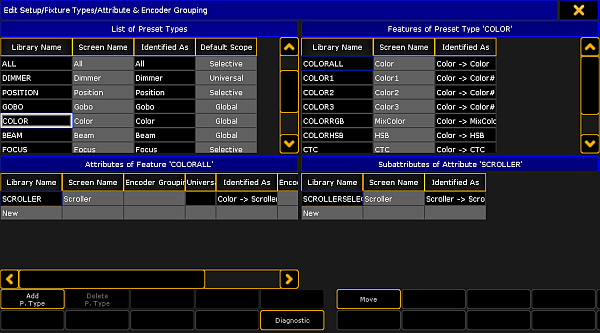

Encoder grouping is used to collectively take attributes into the programmer.
Important:
It is advisable to set the encoder grouping before creating a new show. That is, before generating presets. Particularly when using the function "Encoder Grouping" in the menu Auto Create Presets.
Important:
Encoder groupings are non user-definable. That is, once created, they are valid for the entire show file.
How To Group Encoders
Tap Setup -> Patch and Fixture Schedule
Then tap Fixture Types on the right of the dialog EditSetup
Tap Attribute & Encoder Grouping on the right of the dialog Fixture Types.

Attribute & Encoder Grouping
The dialog Edit Setup/Fixture Type/Attribute & Encoder Grouping opens.
To edit or create new encoder grouping:
-Choose a preset type in the List of Preset Types at the top on the left.
-After that, choose a feature in Features of Preset Type at the top on the right.
-Then tap and hold the column "Encoder Grouping" in Attributes of Feature at the bottom on the left.
-The pop-up Select Group opens.
-Choose one of the groups in this pop-up.
-To create a new group, scroll down and tap New Group.
Hint:
Many attributes are already grouped, for example the function pan and tilt or RGB.
Pan and tilt is grouped since the position a fixture occupies has two directions.
RGB is grouped, because the color consists of a mixture between red, green and blue.